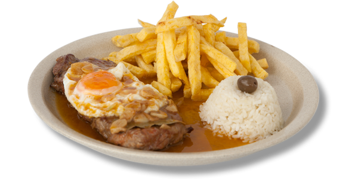

|
| Bifes fritos |
|  |
Descrição
Este é um prato comum. Podemos encontrar este prato em quase todos os establecimentos
e é considerado comida de conforto
|
Ingredientes
- Bifes de vaca
- Azeite
- Louro
- Alhos
- Margarina
- Vinho branco
- Vinagre
- Mostarda
|
Preparação
- Colocar numa frigideira azeite e margarina com os dentes de alho e a folha de louro
- Colocar os bifes a fritar
- Passado um tempo colocar a mostarda e espalhar para não queimar
- Regar tudo com um pouco de vinho branco
- Retirar os bifes assim que estejam fritos
- No restante molho que ficou na frigideira deitar umas gotas de vinagre e tapar de forma a abafar o molho
- Juntar os bifes novamente ao molho e servir com batata frita e arroz
|